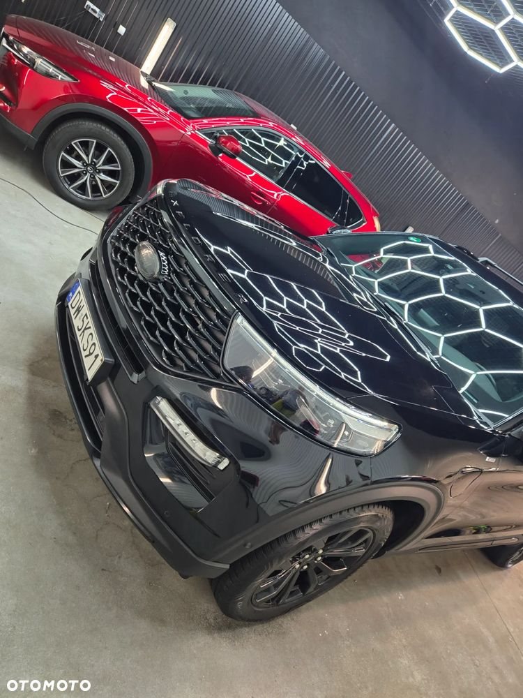
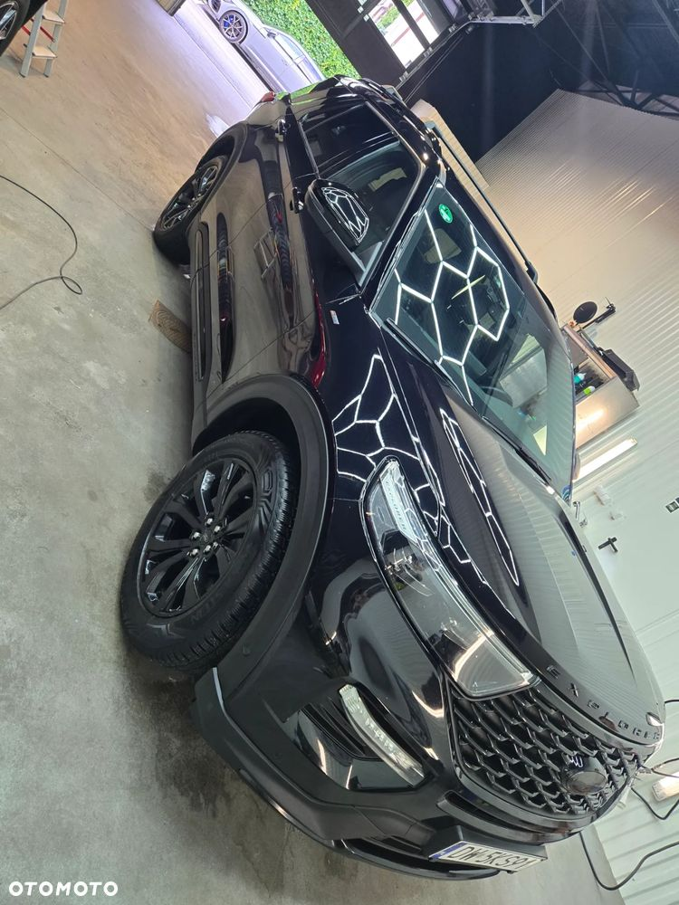
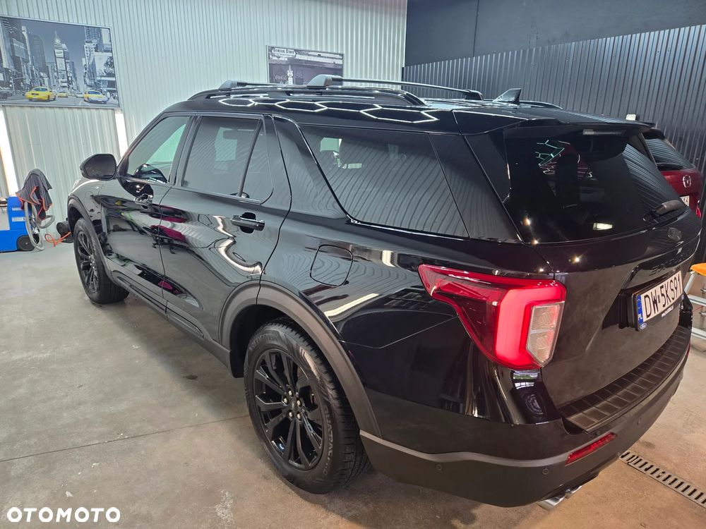
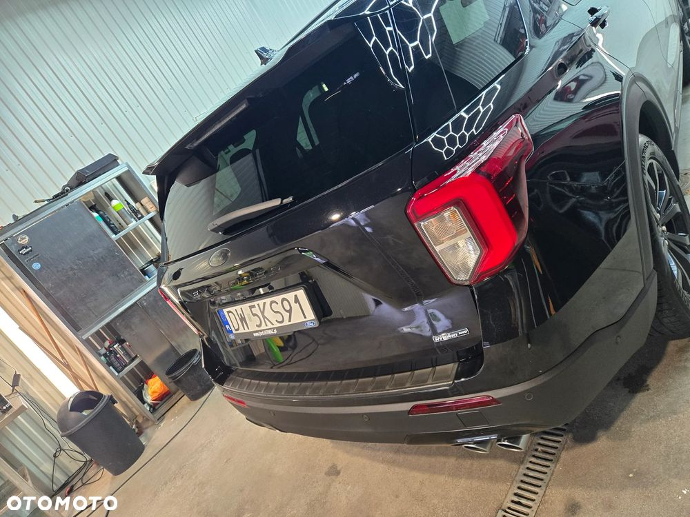

Serwisowany, Pakiet przegladów do 100K km oraz przedłużona gwarancja do 26.10.2025 lub 160K km
Wyjechał z salonu z dodatkowowymi opcjami:
1. Czarne znaczki
2. Czarne felgi
3. relingi i BOX THULE:
Thule®* Box dachowy Do wersji FORCE XT Alpine, Aeroskin matt black - 3 149,00 zł1
4. rejestrator VIDEO przód + tył,:
- Mio SmartBox III
- Mio MiVue J85 2.5K/150/WiFi
- Mio A30 Full HD Kamera tylna do kamer Mio
5. bezprzewodowy ANDROID AUTO - firmy Aawireless
Istnieje mozliwosc przejęcia leasingu - EFL - koniec leasingu 2025-10-09
W przypadku cesji:
- odstępne na FVAT w lutym 10K pln netto
- rata 6x ok. 5300 pln netto - w tym pełne ubezpieczenie AC/OC/NW i GAP
- wykup 2025-09-09 - 119993,50 pln netto
